voos <- flights |>
left_join(airlines, by = "carrier") |>
rename(companhia = name)1 Atrasos de voos nos aeroportos de Nova York
Atrasos custam caro: passageiros perdem conexões, tripulações estouram a jornada de trabalho, aeronaves ficam fora de posição para o voo seguinte e o atendimento é sobrecarregado com remarcações. Para reduzi-los, a equipe de operações precisa, antes de tudo, saber onde e quando eles acontecem.
Neste capítulo, um gestor de operações analisa todos os voos que partiram dos três aeroportos da cidade de Nova York em um ano, para decidir onde concentrar os esforços de melhoria. Quatro perguntas guiam a análise:
- Gargalos: quais rotas e companhias concentram os maiores atrasos?
- Aeroportos e horários: há diferença entre os aeroportos? Em que horários os atrasos pioram?
- Sazonalidade: a época do ano e o dia da semana afetam a operação?
- Clima: quanto o tempo ruim piora a pontualidade?
Para responder, usamos a análise descritiva: resumir e visualizar os dados para encontrar padrões, sem construir modelos. Ela é o ponto de partida de qualquer projeto de dados, e muitas vezes já basta para orientar decisões. Ao longo do capítulo, apresentamos as ferramentas básicas da estatística descritiva (tipos de variáveis, medidas resumo e gráficos), sempre aplicadas a uma pergunta do caso.
Seguimos as etapas do CRISP-DM apresentadas na introdução do livro. Todo o trabalho é feito em R.
| Etapa do CRISP-DM | Onde aparece no capítulo |
|---|---|
| Entendimento do negócio | Esta introdução: as perguntas do gestor de operações |
| Entendimento dos dados | Dados e ferramentas da análise descritiva |
| Preparação dos dados | Tratamento dos voos cancelados e junção com os dados de clima |
| Modelagem | Não se aplica: o capítulo é descritivo |
| Avaliação | Estudo de caso: gargalos, aeroportos e horários, sazonalidade e clima |
| Implantação | Uso prático: um painel de indicadores de pontualidade |
1.1 Dados
Os dados vêm do pacote nycflights13, que reúne informações de todos os voos domésticos que partiram dos três aeroportos da cidade de Nova York em 2013: John F. Kennedy (JFK), LaGuardia (LGA) e Newark (EWR). O pacote traz cinco tabelas:
flights: um registro por voo, com data, horários previstos e realizados, atrasos, companhia aérea, origem, destino e distância;weather: as condições do tempo, hora a hora, em cada aeroporto de origem;airlines: o nome de cada companhia aérea;airports: informações dos aeroportos;planes: informações das aeronaves.
As variáveis de atraso mais usadas no capítulo são:
dep_delay: atraso na partida, em minutos (diferença entre o horário real e o previsto). É a medida da operação no aeroporto de origem.arr_delay: atraso na chegada, em minutos. É o atraso que o passageiro sente.
Valores negativos indicam voos que partiram ou chegaram adiantados.
| year | month | day | dep_time | sched_dep_time | dep_delay | arr_time | sched_arr_time | arr_delay | carrier | flight | tailnum | origin | dest | companhia |
|---|---|---|---|---|---|---|---|---|---|---|---|---|---|---|
| 2.013 | 1 | 1 | 517 | 515 | 2 | 830 | 819 | 11 | UA | 1.545 | N14228 | EWR | IAH | United Air Lines Inc. |
| 2.013 | 1 | 1 | 533 | 529 | 4 | 850 | 830 | 20 | UA | 1.714 | N24211 | LGA | IAH | United Air Lines Inc. |
| 2.013 | 1 | 1 | 542 | 540 | 2 | 923 | 850 | 33 | AA | 1.141 | N619AA | JFK | MIA | American Airlines Inc. |
| 2.013 | 1 | 1 | 544 | 545 | -1 | 1.004 | 1.022 | -18 | B6 | 725 | N804JB | JFK | BQN | JetBlue Airways |
| 2.013 | 1 | 1 | 554 | 600 | -6 | 812 | 837 | -25 | DL | 461 | N668DN | LGA | ATL | Delta Air Lines Inc. |
A base tem 336.776 voos. Desses, 8.255 (2,5%) não têm horário de partida: são voos cancelados. Eles não têm atraso calculado e ficam de fora das médias de atraso, mas não devem ser esquecidos: um voo cancelado costuma ser pior para o passageiro do que um voo atrasado.
AvisoDados e limitações
- Os dados são de um único ano (2013) e cobrem apenas voos domésticos que partem de Nova York.
- O clima está disponível só para os aeroportos de origem: o tempo no destino, que também afeta a chegada, não está na base.
- A análise é descritiva: ela mostra onde e quando os atrasos acontecem e o que vem associado a eles, mas não prova causas.
1.1.1 Para onde vão os voos
O mapa abaixo mostra a malha de rotas, com um painel para cada aeroporto de origem: cada linha liga o aeroporto a um destino, com a espessura proporcional ao número de voos no ano. Em cinza, as rotas dos outros dois aeroportos, para comparação. As coordenadas vêm da tabela airports.
malha <- voos |>
count(origin, dest, name = "voos") |>
inner_join(select(airports, faa, lat_o = lat, lon_o = lon), by = c("origin" = "faa")) |>
inner_join(select(airports, faa, lat_d = lat, lon_d = lon), by = c("dest" = "faa")) |>
filter(lon_d > -130, lat_d > 24) |> # só os EUA continentais
arrange(desc(voos)) # rotas grossas embaixo, finas por cima
estados <- map_data("state")
nomes_origem <- c(EWR = "Newark (EWR)", JFK = "John F. Kennedy (JFK)", LGA = "LaGuardia (LGA)")
# um painel por aeroporto; em cinza, as rotas dos outros dois, para comparação
ggplot() +
geom_polygon(data = estados, aes(long, lat, group = group),
fill = "grey95", color = "grey75", linewidth = 0.2) +
geom_curve(data = select(malha, -origin),
aes(x = lon_o, y = lat_o, xend = lon_d, yend = lat_d),
curvature = 0.2, color = "grey80", linewidth = 0.2) +
geom_curve(data = malha,
aes(x = lon_o, y = lat_o, xend = lon_d, yend = lat_d,
color = origin, linewidth = voos),
curvature = 0.2, alpha = 0.7) +
geom_point(data = malha, aes(lon_d, lat_d, color = origin), size = 0.8) +
facet_wrap(~ origin, ncol = 1, labeller = as_labeller(nomes_origem)) +
scale_linewidth_continuous(range = c(0.15, 2),
labels = scales::label_number(big.mark = ".")) +
coord_quickmap() +
guides(color = "none") +
labs(linewidth = "Voos no ano") +
theme_void() +
theme(legend.position = "bottom",
strip.text = element_text(face = "bold", size = 11, margin = margin(b = 4)),
panel.spacing = unit(1, "lines"))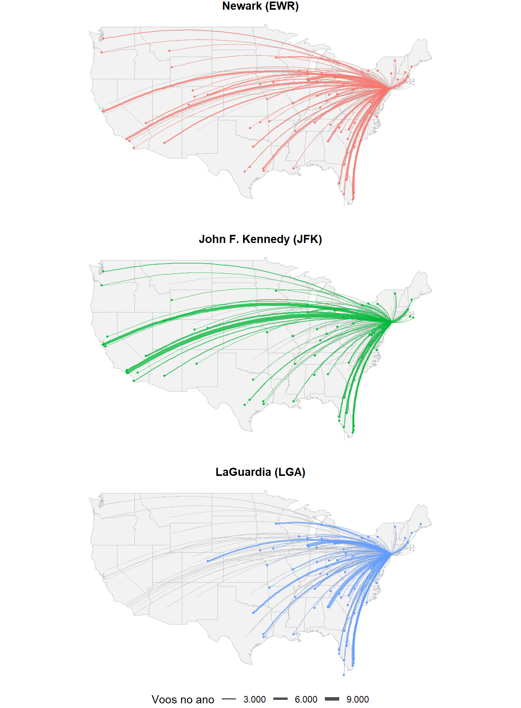
Os voos vão para 105 destinos. O mapa mostra os dos Estados Unidos continentais. Ficam de fora Ted Stevens Anchorage Intl e Honolulu Intl, fora do continente, e 4 destinos em Porto Rico e nas Ilhas Virgens Americanas (BQN, SJU, STT, PSE), que não têm coordenadas na tabela airports. A malha mostra que os aeroportos têm perfis diferentes. O JFK concentra as rotas longas, para a costa oeste: 39% dos voos de lá passam de 1.500 milhas. No LaGuardia, são só 4%, e o destino mais distante é DEN, a 1.620 milhas: o aeroporto tem uma regra de perímetro, que limita os voos a cerca de 1.500 milhas, com exceção de Denver. Essas diferenças de perfil ajudam a entender as diferenças de desempenho que veremos adiante.
1.2 Ferramentas da análise descritiva
Antes do estudo de caso, apresentamos as ferramentas que vamos usar, cada uma aplicada a uma pergunta sobre os voos.
1.2.1 Tipos de variáveis
O tipo de uma variável define como resumi-la e qual gráfico usar.
- Qualitativas (ou categóricas) descrevem atributos:
- nominais, sem ordem: aeroporto de origem (
origin), destino (dest), companhia aérea (carrier); - ordinais, com ordem: por exemplo, faixas de atraso (“no horário”, “até 15 minutos”, “mais de 15 minutos”).
- nominais, sem ordem: aeroporto de origem (
- Quantitativas representam medidas numéricas:
- contínuas, que podem assumir qualquer valor em um intervalo: tempo de voo (
air_time), distância (distance), atraso; - discretas, que assumem valores contáveis: hora prevista de partida (
hour), número de voos por dia.
- contínuas, que podem assumir qualquer valor em um intervalo: tempo de voo (
Variáveis de tempo, como mês e dia da semana, ficam no meio do caminho: podem ser tratadas como números ou como categorias ordenadas, conforme o objetivo da análise.
1.2.2 Medidas resumo
As medidas de posição indicam onde estão os valores: mínimo, máximo, média, mediana (o valor que divide os dados ao meio) e percentis (o percentil 90, por exemplo, é o valor abaixo do qual estão 90% dos dados). As medidas de dispersão indicam o quanto os valores variam: amplitude (máximo menos mínimo), intervalo interquartil (a distância entre os percentis 25 e 75), variância e desvio padrão.
Vamos calculá-las para o atraso na partida:
atraso <- voos$dep_delay[!is.na(voos$dep_delay)]
medidas <- tibble(
Medida = c("Mínimo", "Percentil 25", "Mediana", "Média", "Percentil 75",
"Percentil 90", "Máximo", "Desvio padrão"),
`Atraso na partida (minutos)` = c(min(atraso), quantile(atraso, 0.25), median(atraso),
mean(atraso), quantile(atraso, 0.75),
quantile(atraso, 0.90), max(atraso), sd(atraso))
) |>
mutate(`Atraso na partida (minutos)` = round(`Atraso na partida (minutos)`, 1))| Medida | Atraso na partida (minutos) |
|---|---|
| Mínimo | -43,0 |
| Percentil 25 | -5,0 |
| Mediana | -2,0 |
| Média | 12,6 |
| Percentil 75 | 11,0 |
| Percentil 90 | 49,0 |
| Máximo | 1.301,0 |
| Desvio padrão | 40,2 |
A tabela já traz uma lição importante: a média do atraso é de 12,6 minutos, mas a mediana é de -2 minutos. Ou seja, mais da metade dos voos parte no horário ou adiantada (61% deles), e a média é puxada para cima por poucos atrasos muito longos (o máximo passa de 20 horas). Quando a distribuição é assimétrica assim, a média sozinha engana: um “atraso médio de 13 minutos” não descreve o voo típico.
Por isso, ao longo do capítulo, usamos também uma medida mais próxima da experiência do passageiro: o percentual de voos com mais de 15 minutos de atraso, critério de pontualidade usado pelas autoridades de aviação dos Estados Unidos. Na base toda, 21,5% dos voos partiram com mais de 15 minutos de atraso.
Para um primeiro resumo de todas as variáveis de uma vez, a função skim(), do pacote skimr, mostra a contagem de valores faltantes, as medidas resumo e um mini-histograma de cada variável:
skim(select(voos, dep_delay, arr_delay, air_time, distance, hour, origin, carrier))| Name | select(…) |
| Number of rows | 336776 |
| Number of columns | 7 |
| _______________________ | |
| Column type frequency: | |
| character | 2 |
| numeric | 5 |
| ________________________ | |
| Group variables | None |
Variable type: character
| skim_variable | n_missing | complete_rate | min | max | empty | n_unique | whitespace |
|---|---|---|---|---|---|---|---|
| origin | 0 | 1 | 3 | 3 | 0 | 3 | 0 |
| carrier | 0 | 1 | 2 | 2 | 0 | 16 | 0 |
Variable type: numeric
| skim_variable | n_missing | complete_rate | mean | sd | p0 | p25 | p50 | p75 | p100 | hist |
|---|---|---|---|---|---|---|---|---|---|---|
| dep_delay | 8255 | 0.98 | 12.64 | 40.21 | -43 | -5 | -2 | 11 | 1301 | ▇▁▁▁▁ |
| arr_delay | 9430 | 0.97 | 6.90 | 44.63 | -86 | -17 | -5 | 14 | 1272 | ▇▁▁▁▁ |
| air_time | 9430 | 0.97 | 150.69 | 93.69 | 20 | 82 | 129 | 192 | 695 | ▇▂▂▁▁ |
| distance | 0 | 1.00 | 1039.91 | 733.23 | 17 | 502 | 872 | 1389 | 4983 | ▇▃▂▁▁ |
| hour | 0 | 1.00 | 13.18 | 4.66 | 1 | 9 | 13 | 17 | 23 | ▁▇▇▇▅ |
1.2.3 Gráficos para uma variável
O histograma mostra a distribuição de uma variável quantitativa: ele divide os valores em faixas e conta quantas observações caem em cada uma. O histograma do atraso na partida confirma a assimetria: a grande maioria dos voos está perto de zero, e uma cauda longa se estende para a direita (o gráfico mostra só os atrasos de até 3 horas).
voos |>
filter(dep_delay <= 180) |>
ggplot(aes(dep_delay)) +
geom_histogram(binwidth = 5, fill = "skyblue", color = "white") +
labs(x = "Atraso na partida (minutos)", y = "Número de voos")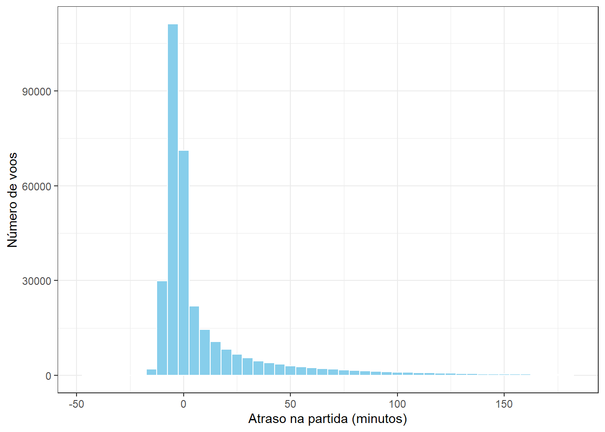
O gráfico de densidade é uma versão suavizada do histograma. Ele é útil para comparar distribuições. O tempo de voo, por exemplo, mostra que os aeroportos têm perfis diferentes: o JFK concentra mais voos longos (para a costa oeste), e o LaGuardia, voos curtos e médios.
voos |>
filter(!is.na(air_time)) |>
ggplot(aes(air_time, fill = origin)) +
geom_density(alpha = 0.4) +
labs(x = "Tempo de voo (minutos)", y = "Densidade", fill = "Origem")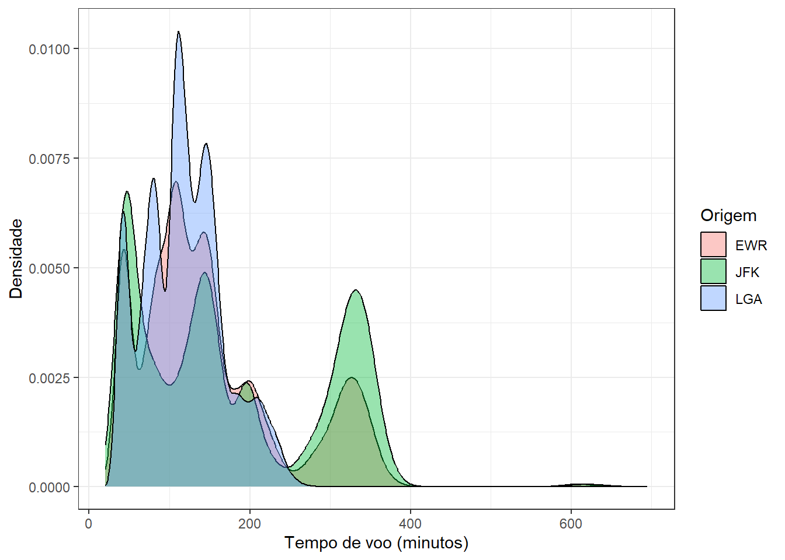
O gráfico de barras mostra a frequência de cada categoria de uma variável qualitativa. Ordenar as barras pelo tamanho facilita a leitura:
voos |>
count(companhia) |>
ggplot(aes(n, fct_reorder(companhia, n))) +
geom_col(fill = "lightblue") +
labs(x = "Número de voos", y = NULL)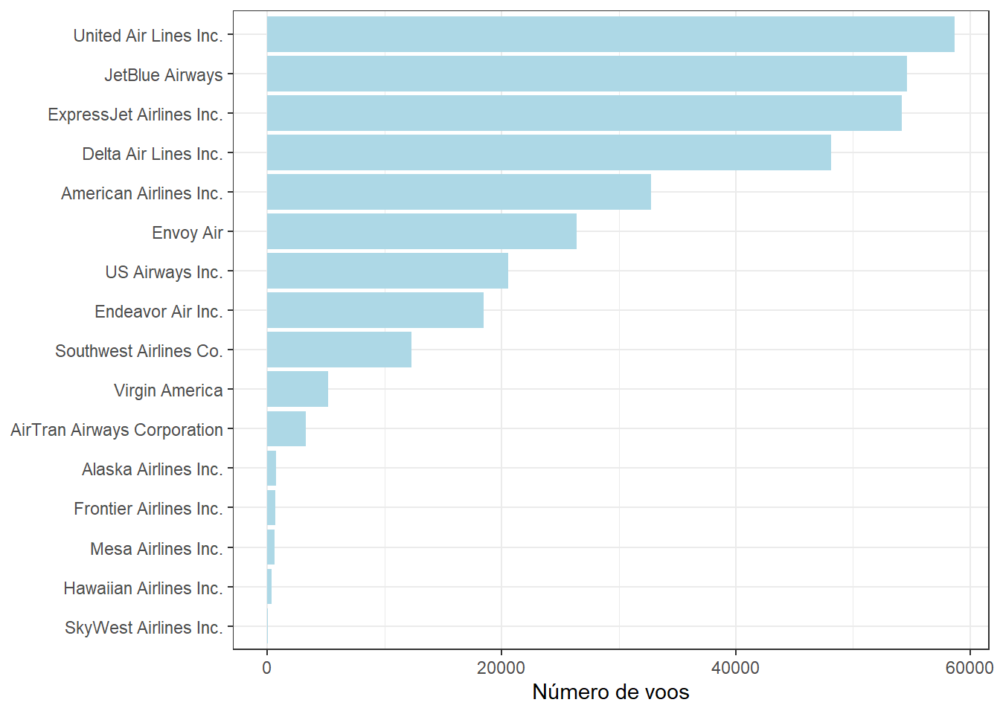
O gráfico de setores (pizza) mostra a proporção de cada categoria no total. Ele é popular, mas deve ser usado com cuidado: o olho humano compara mal ângulos e áreas, e com mais de três ou quatro categorias as fatias ficam difíceis de distinguir. Aqui, com apenas três aeroportos, ele funciona razoavelmente; ainda assim, o gráfico de barras costuma ser mais claro.
voos |>
count(origin) |>
ggplot(aes(x = "", y = n, fill = origin)) +
geom_col(width = 1) +
coord_polar(theta = "y") +
labs(x = NULL, y = NULL, fill = "Origem") +
theme_void()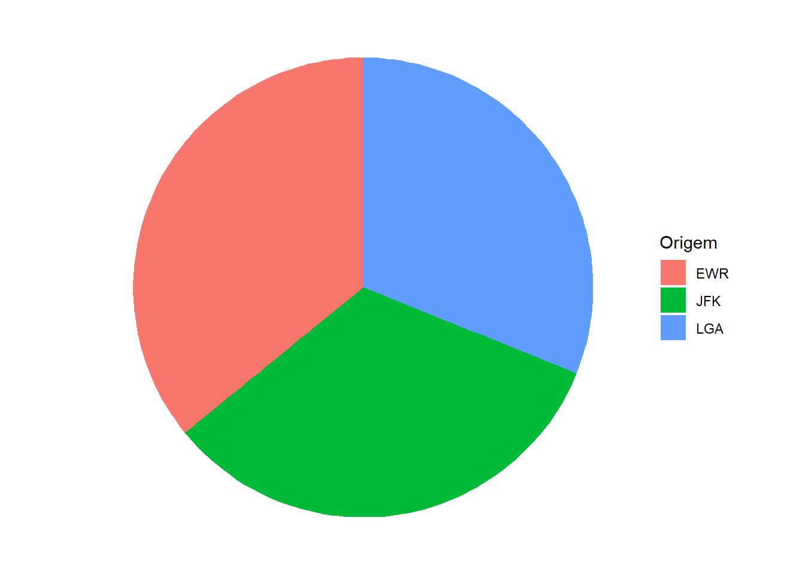
1.2.4 Gráficos para duas variáveis
O boxplot resume a distribuição de uma variável quantitativa e é ótimo para comparar grupos. A caixa vai do percentil 25 ao 75 (o intervalo interquartil), a linha no meio da caixa é a mediana, e as hastes se estendem até 1,5 intervalo interquartil a partir da caixa. Os pontos além das hastes são valores atípicos (outliers). Comparando o atraso na partida entre os aeroportos (o gráfico corta o eixo em 2 horas para mostrar as caixas):
voos |>
filter(!is.na(dep_delay)) |>
ggplot(aes(origin, dep_delay, fill = origin)) +
geom_boxplot(show.legend = FALSE, outlier.alpha = 0.1) +
coord_cartesian(ylim = c(-30, 120)) +
labs(x = "Origem", y = "Atraso na partida (minutos)")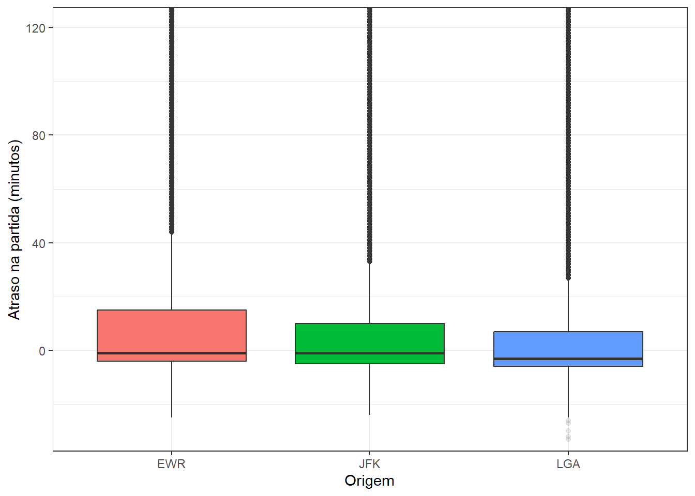
As medianas dos três aeroportos ficam perto de zero, mas as caixas e as hastes mostram diferenças no lado dos atrasos, que veremos em detalhe no estudo de caso.
As barras empilhadas em 100% mostram como uma variável qualitativa se divide dentro de cada categoria de outra. Aqui, a situação de pontualidade de cada voo (uma variável ordinal que criamos a partir do atraso) em cada aeroporto:
voos |>
mutate(situacao = case_when(
is.na(dep_delay) ~ "Cancelado",
dep_delay <= 0 ~ "No horário ou adiantado",
dep_delay <= 15 ~ "Até 15 min de atraso",
TRUE ~ "Mais de 15 min de atraso"
),
situacao = factor(situacao, levels = c("No horário ou adiantado", "Até 15 min de atraso",
"Mais de 15 min de atraso", "Cancelado"))) |>
ggplot(aes(origin, fill = situacao)) +
geom_bar(position = "fill") +
scale_y_continuous(labels = scales::percent) +
scale_fill_manual(values = c("#66c2a5", "#ffd92f", "#fc8d62", "grey50")) +
labs(x = "Origem", y = "Proporção dos voos", fill = NULL)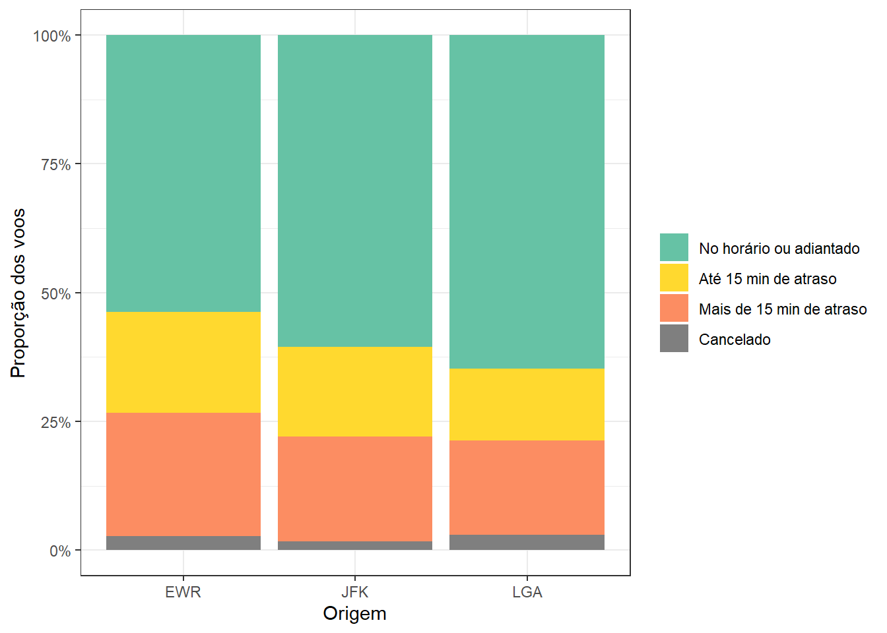
O gráfico de dispersão mostra a relação entre duas variáveis quantitativas. A relação entre distância e tempo de voo é quase uma reta, como esperado. Com mais de 300 mil voos, os pontos se sobreporiam a ponto de virar uma mancha, então o gráfico usa uma amostra de 5 mil voos:
set.seed(1)
voos |>
filter(!is.na(air_time)) |>
slice_sample(n = 5000) |>
ggplot(aes(distance, air_time)) +
geom_point(alpha = 0.3, color = "darkorange") +
labs(x = "Distância (milhas)", y = "Tempo de voo (minutos)")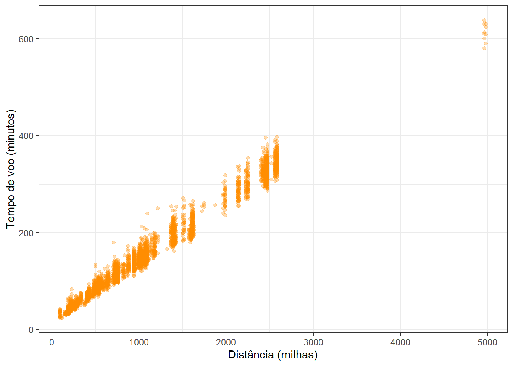
Uma relação menos óbvia aparece quando resumimos os voos por destino: a distância média e o atraso médio na chegada de cada destino com pelo menos 50 voos.
por_destino <- voos |>
filter(!is.na(arr_delay)) |>
group_by(dest) |>
summarise(distancia = mean(distance), atraso = mean(arr_delay), n = n()) |>
filter(n >= 50)
por_destino |>
ggplot(aes(distancia, atraso)) +
geom_hline(yintercept = 0, linetype = "dashed") +
geom_point(aes(size = n), alpha = 0.6, color = "steelblue") +
geom_text_repel(data = slice_max(por_destino, abs(atraso), n = 6),
aes(label = dest), size = 3) +
labs(x = "Distância média (milhas)", y = "Atraso médio na chegada (minutos)",
size = "Voos")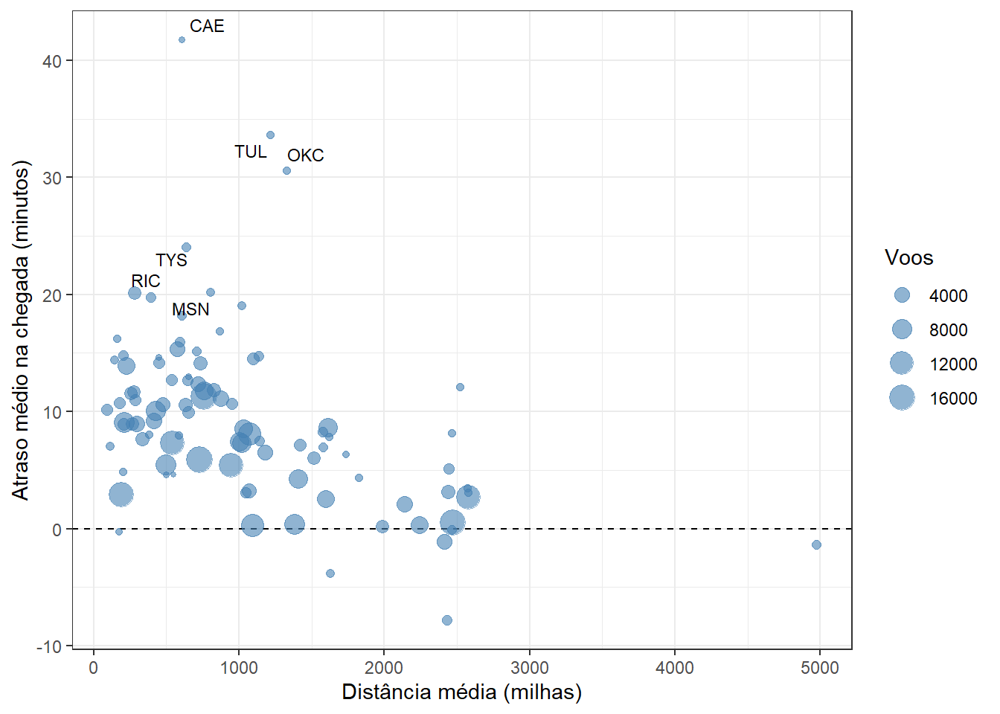
A correlação entre as duas é de -0,43: destinos mais distantes tendem a ter atraso menor na chegada. Uma explicação possível é que voos longos conseguem recuperar parte do atraso da partida durante o voo. Mas atenção: a correlação descreve uma tendência média e não prova essa explicação, que precisaria ser verificada.
1.3 Estudo de caso
Com as ferramentas apresentadas, voltamos às quatro perguntas do gestor de operações.
1.3.1 Gargalos: rotas e companhias
Para encontrar os gargalos, calculamos o atraso médio na chegada (o que o passageiro sente) e o percentual de voos com mais de 15 minutos de atraso para cada rota (origem e destino). Consideramos apenas rotas com pelo menos 50 voos no ano, para que a média não seja definida por poucos voos.
rotas <- voos |>
filter(!is.na(arr_delay)) |>
group_by(origin, dest) |>
summarise(voos = n(),
atraso_medio = mean(arr_delay),
pct_15 = mean(arr_delay > 15),
companhias = paste(names(sort(table(carrier), decreasing = TRUE)), collapse = ", "),
.groups = "drop") |>
filter(voos >= 50) |>
arrange(desc(atraso_medio))
rotas_criticas <- slice_head(rotas, n = 10)| Rota | Voos | Atraso médio (min) | % com mais de 15 min | Companhias |
|---|---|---|---|---|
| EWR → CAE | 94 | 44,6 | 64% | EV |
| EWR → TYS | 313 | 41,2 | 49% | EV |
| EWR → TUL | 294 | 33,7 | 48% | EV |
| EWR → OKC | 315 | 30,6 | 50% | EV |
| EWR → RIC | 1.615 | 25,8 | 40% | EV |
| EWR → MKE | 1.058 | 24,0 | 38% | EV |
| EWR → DSM | 390 | 23,5 | 37% | EV |
| EWR → MSN | 345 | 23,2 | 38% | EV |
| EWR → PWM | 730 | 23,0 | 36% | EV |
| JFK → CMH | 705 | 22,9 | 37% | MQ, 9E |
Das 200 rotas analisadas, as 10 com maior atraso médio têm um padrão claro: 9 partem de Newark (EWR), e a ExpressJet Airlines Inc. opera 88% dos voos dessas rotas. Na coluna de companhias, cada rota crítica é praticamente operada por uma única companhia.
Isso tem uma consequência importante para a interpretação: não é possível separar o efeito da rota do efeito da companhia. O atraso pode vir da operação da companhia, do aeroporto, da rota ou de tudo isso junto, e os dados descritivos não dizem qual. Para o gestor, o próximo passo é conversar com a companhia sobre essas rotas específicas, e não concluir de antemão quem é o responsável.
Também vale dimensionar o problema: essas 10 rotas somam 1,8% dos voos do ano. Resolver os atrasos delas melhora a vida de quem voa nessas rotas, mas não muda o quadro geral. Para isso, é preciso olhar para os aeroportos e os horários.
A comparação entre as companhias, com o mesmo critério de pelo menos 50 voos, completa o quadro:
por_companhia <- voos |>
filter(!is.na(arr_delay)) |>
group_by(companhia) |>
summarise(voos = n(), atraso_medio = mean(arr_delay), pct_15 = mean(arr_delay > 15)) |>
filter(voos >= 50)
por_companhia |>
ggplot(aes(pct_15, fct_reorder(companhia, pct_15))) +
geom_col(fill = "salmon") +
scale_x_continuous(labels = scales::percent) +
labs(x = "Voos com mais de 15 minutos de atraso na chegada", y = NULL)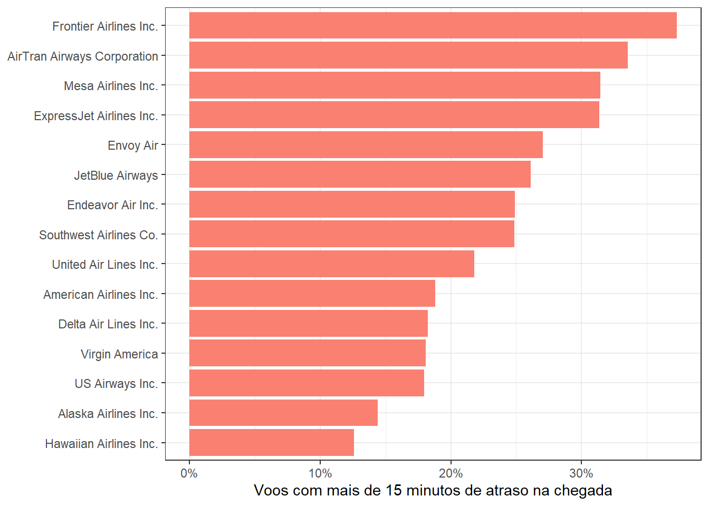
A ExpressJet, que opera quase todas as rotas críticas, também está entre as companhias com maior percentual de voos atrasados (31%), e tem um volume grande: ela faz 36% dos voos de Newark, e 81% dos voos dela saem de lá. Ou seja, o desempenho de Newark e o da ExpressJet estão entrelaçados, o que reforça o cuidado na interpretação.
1.3.2 Aeroportos e horários
por_aeroporto <- voos |>
group_by(Origem = origin) |>
summarise(Voos = n(),
`Atraso médio (min)` = round(mean(dep_delay, na.rm = TRUE), 1),
`Atraso mediano (min)` = median(dep_delay, na.rm = TRUE),
`% com mais de 15 min` = pct(mean(dep_delay > 15, na.rm = TRUE), 1),
`% cancelados` = pct(mean(is.na(dep_time)), 1))| Origem | Voos | Atraso médio (min) | Atraso mediano (min) | % com mais de 15 min | % cancelados |
|---|---|---|---|---|---|
| EWR | 120.835 | 15,1 | -1 | 24,6% | 2,7% |
| JFK | 111.279 | 12,1 | -1 | 20,7% | 1,7% |
| LGA | 104.662 | 10,3 | -3 | 18,9% | 3,0% |
Newark tem o pior desempenho na partida: atraso médio de 15,1 minutos e 25% dos voos com mais de 15 minutos de atraso, contra 10,3 minutos e 19% no LGA, o melhor dos três. As medianas, porém, são parecidas e próximas de zero: o voo típico parte no horário nos três aeroportos, e a diferença está na frequência e no tamanho dos atrasos.
O horário revela o padrão mais forte da base:
voos |>
filter(!is.na(dep_delay)) |>
group_by(origin, hour) |>
summarise(pct_15 = mean(dep_delay > 15), voos = n(), .groups = "drop") |>
filter(voos >= 100) |>
ggplot(aes(hour, pct_15, color = origin)) +
geom_line(linewidth = 1) +
geom_point() +
scale_y_continuous(labels = scales::percent) +
scale_x_continuous(breaks = seq(5, 23, 2)) +
labs(x = "Hora prevista de partida", y = "Voos com mais de 15 min de atraso",
color = "Origem")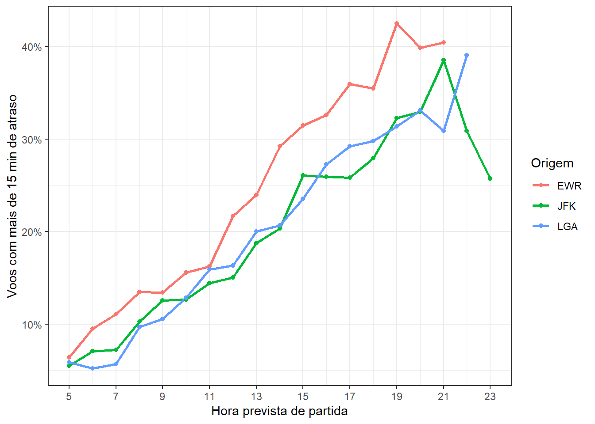
Nos três aeroportos, os atrasos crescem ao longo do dia. Nos voos previstos até as 7h, 8% partem com mais de 15 minutos de atraso; no pior horário, às 21h, são 37%. É o efeito de propagação: a mesma aeronave e a mesma tripulação fazem vários voos por dia, e cada atraso empurra os voos seguintes. De manhã, a operação começa “limpa”; à noite, carrega os atrasos acumulados.
Para o gestor, isso indica onde agir: proteger os primeiros voos do dia, prever folgas entre voos nos horários de pico e ter aeronaves e tripulações de reserva no fim da tarde, quando os atrasos se acumulam.
1.3.3 Sazonalidade
por_mes <- voos |>
filter(!is.na(arr_delay)) |>
group_by(month) |>
summarise(pct_15 = mean(arr_delay > 15))
por_mes |>
ggplot(aes(factor(month), pct_15)) +
geom_col(fill = "lightgreen") +
scale_y_continuous(labels = scales::percent) +
labs(x = "Mês", y = "Voos com mais de 15 min de atraso na chegada")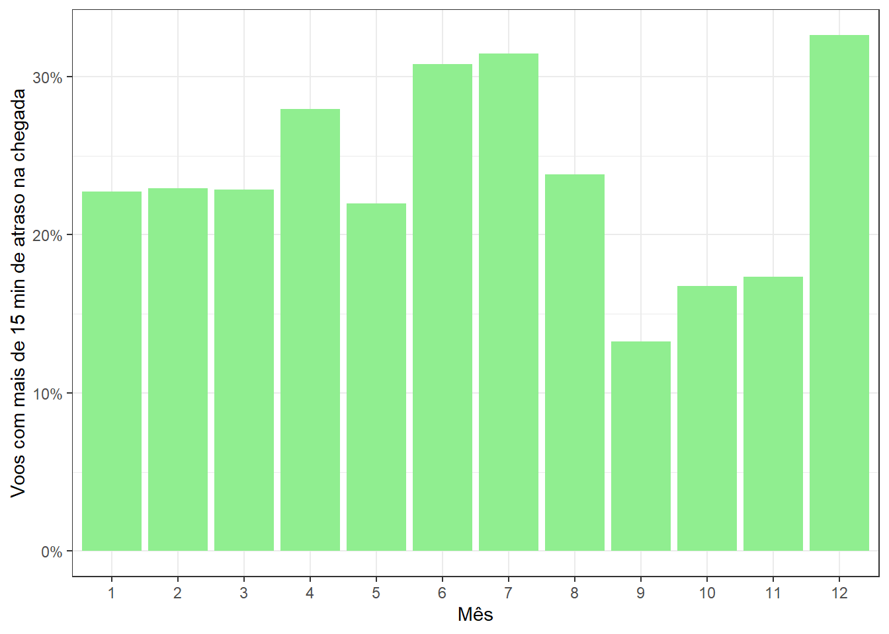
Os meses com mais atrasos são junho, julho e dezembro, períodos de férias e festas de fim de ano nos Estados Unidos, com aeroportos cheios e, no verão, tempestades frequentes. O melhor mês é setembro, com 13% de voos atrasados.
dias_pt <- c("domingo", "segunda", "terça", "quarta", "quinta", "sexta", "sábado")
por_dia <- voos |>
filter(!is.na(arr_delay)) |>
mutate(dia = factor(dias_pt[wday(time_hour)], levels = dias_pt)) |>
group_by(dia) |>
summarise(pct_15 = mean(arr_delay > 15))
por_dia |>
ggplot(aes(dia, pct_15)) +
geom_col(fill = "plum") +
scale_y_continuous(labels = scales::percent) +
labs(x = NULL, y = "Voos com mais de 15 min de atraso na chegada")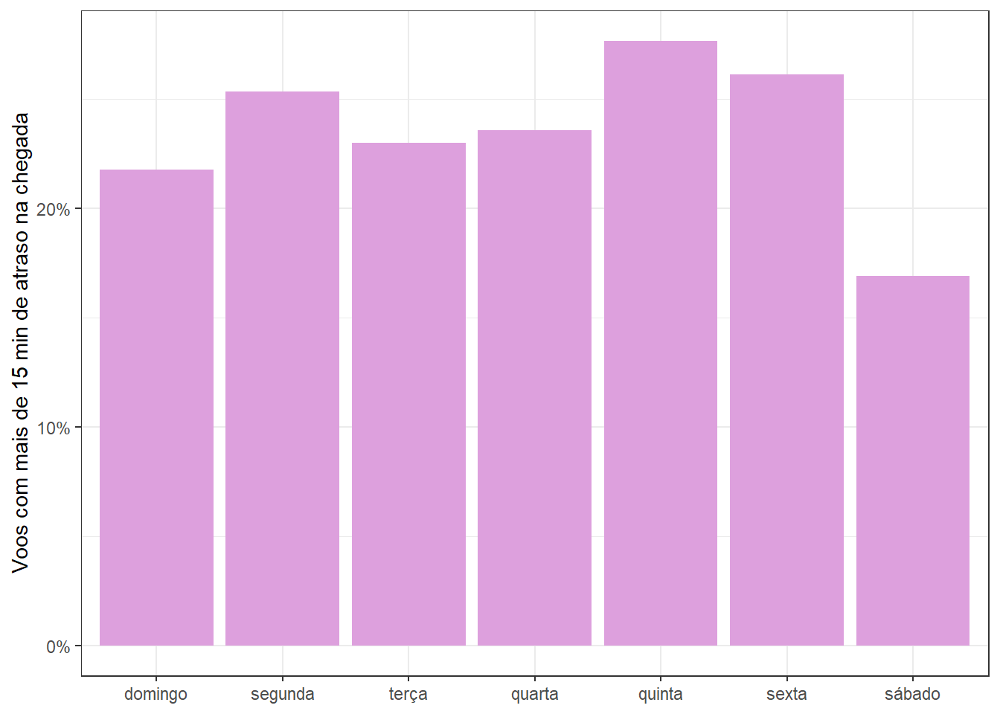
Na semana, o pior dia é quinta (28% dos voos atrasados) e o melhor é sábado (17%), o dia com menos voos programados. A sazonalidade ajuda a planejar a capacidade: reforçar equipes e reservas nos meses e dias críticos.
1.3.4 Clima
Para avaliar o papel do clima, juntamos a cada voo as condições do tempo no aeroporto de origem, na hora prevista da partida. A junção usa o aeroporto e a hora (origin e time_hour), que identificam cada registro da tabela weather.
voos_clima <- voos |>
left_join(select(weather, origin, time_hour, temp, wind_speed, precip, visib),
by = c("origin", "time_hour"))Apenas 0,5% dos voos ficaram sem dados de clima. Um cuidado de qualidade dos dados: a tabela weather tem um registro de vento de 1.048 milhas por hora, um valor impossível, que é claramente um erro de registro. Como usamos faixas de vento (acima de 20 mph), esse valor isolado não altera os resultados, mas, em uma análise real, ele deveria ser corrigido ou removido.
Comparamos os voos que partiram com e sem cada condição adversa: chuva (qualquer precipitação), baixa visibilidade (menos de 3 milhas) e vento forte (acima de 20 milhas por hora).
compara <- function(condicao, nome) {
voos_clima |>
filter(!is.na(dep_delay), !is.na({{ condicao }})) |>
group_by(Situação = if_else({{ condicao }}, "Com", "Sem")) |>
summarise(Voos = n(),
`Atraso médio (min)` = round(mean(dep_delay), 1),
`% com mais de 15 min` = mean(dep_delay > 15)) |>
mutate(Condição = nome, .before = 1)
}
clima <- bind_rows(
compara(precip > 0, "Chuva"),
compara(visib < 3, "Visibilidade baixa"),
compara(wind_speed > 20, "Vento forte")
)| Condição | Situação | Voos | Atraso médio (min) | % com mais de 15 min |
|---|---|---|---|---|
| Chuva | Com | 21.086 | 30,9 | 39,2% |
| Chuva | Sem | 305.907 | 11,4 | 20,3% |
| Visibilidade baixa | Com | 12.015 | 26,7 | 34,2% |
| Visibilidade baixa | Sem | 314.978 | 12,1 | 21,1% |
| Vento forte | Com | 19.988 | 16,9 | 26,7% |
| Vento forte | Sem | 306.927 | 12,4 | 21,2% |
O clima tem um efeito forte. Com chuva, o atraso médio na partida é de 30,9 minutos, contra 11,4 sem chuva, e 39% dos voos atrasam mais de 15 minutos, contra 20%. A baixa visibilidade tem um efeito parecido, e o vento forte, um efeito menor. O tempo ruim também multiplica os cancelamentos: 6,4% dos voos são cancelados em condições adversas, contra 1,8% com tempo bom.
Quanto mais chuva, maior o atraso, o que reforça a associação:
voos_clima |>
filter(!is.na(dep_delay), !is.na(precip)) |>
mutate(chuva = cut(precip, breaks = c(-Inf, 0, 0.05, 0.2, Inf),
labels = c("Sem chuva", "Fraca", "Moderada", "Forte"))) |>
group_by(chuva) |>
summarise(pct_15 = mean(dep_delay > 15)) |>
ggplot(aes(chuva, pct_15)) +
geom_col(fill = "steelblue") +
scale_y_continuous(labels = scales::percent) +
labs(x = "Precipitação na hora da partida", y = "Voos com mais de 15 min de atraso")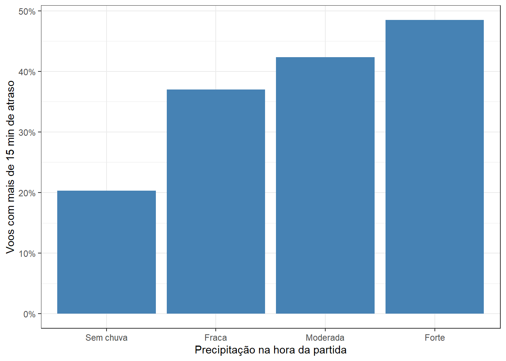
Ainda assim, o clima não explica a maior parte do problema: 80% dos voos que partiram com mais de 15 minutos de atraso saíram com tempo bom. O tempo ruim piora muito a operação quando acontece, mas acontece em poucas horas do ano. A maior parte dos atrasos é operacional, o que é uma boa notícia para o gestor: é a parte que ele consegue controlar.
1.4 Uso prático
Para que serve. A análise aponta onde concentrar os esforços: os horários de fim de tarde e noite (propagação dos atrasos), o aeroporto de Newark, um pequeno grupo de rotas operadas quase sempre por uma única companhia e os meses de maior movimento. Também mostra que o clima, embora piore muito a operação, explica uma parte menor dos atrasos: há espaço para melhorar a operação mesmo com tempo bom.
Para que não serve. A análise descritiva mostra associações, e não causas. Ela não diz, por exemplo, se as rotas críticas atrasam por causa da companhia, do aeroporto ou da rota, nem garante que uma ação específica vai reduzir os atrasos. Essas perguntas exigem investigar a operação e, quando possível, testar as mudanças.
Como usar. Os resultados podem virar um painel de indicadores de pontualidade, com o percentual de voos com mais de 15 minutos de atraso e o percentual de cancelamentos, por aeroporto, horário, rota e companhia. Acompanhar esses números mês a mês mostra se as ações estão funcionando.
Manutenção. Atualizar o painel periodicamente (por exemplo, todo mês) e comparar cada período com o mesmo período do ano anterior, para não confundir sazonalidade com melhora ou piora real.
1.5 Conclusão
Neste capítulo, usamos a análise descritiva para entender os atrasos em 336.776 voos que partiram de Nova York em 2013. As medidas resumo mostraram que a média engana em distribuições assimétricas, e por isso acompanhamos também o percentual de voos com mais de 15 minutos de atraso. Os gráficos revelaram os padrões principais: os atrasos se acumulam ao longo do dia, Newark tem o pior desempenho, poucas rotas concentram atrasos muito altos, os meses de férias são os mais críticos e o tempo ruim piora bastante a pontualidade, embora a maior parte dos atrasos aconteça com tempo bom.
Limitações:
- Os dados são de 2013 e cobrem apenas voos domésticos que partem de Nova York.
- O clima está disponível só para o aeroporto de origem, e não para o destino.
- Nas rotas críticas, o efeito da rota e o da companhia não podem ser separados, porque cada rota é praticamente operada por uma única companhia.
- A análise é descritiva: os padrões encontrados são associações, e não relações de causa e efeito.
Próximos passos: incluir o clima no aeroporto de destino; analisar o atraso da aeronave no voo anterior (usando a matrícula, tailnum), para medir diretamente a propagação; repetir a análise com dados recentes; e construir um modelo para prever a chance de atraso de um voo, um problema de classificação como o do próximo capítulo.
1.6 Referências e materiais complementares
O site Data to Viz ajuda a escolher a visualização adequada para cada tipo de dado e objetivo. Ele organiza os principais tipos de gráfico de forma sistemática, com exemplos e orientações sobre vantagens, limitações e boas práticas de cada um.
Como leitura complementar, recomendamos o livro Storytelling com Dados: um guia sobre visualização de dados para profissionais de negócios, de Cole Nussbaumer Knaflic. Ele mostra como estruturar narrativas claras a partir de dados e como escolhas visuais, foco e contexto transformam uma análise técnica em uma mensagem que apoia decisões.